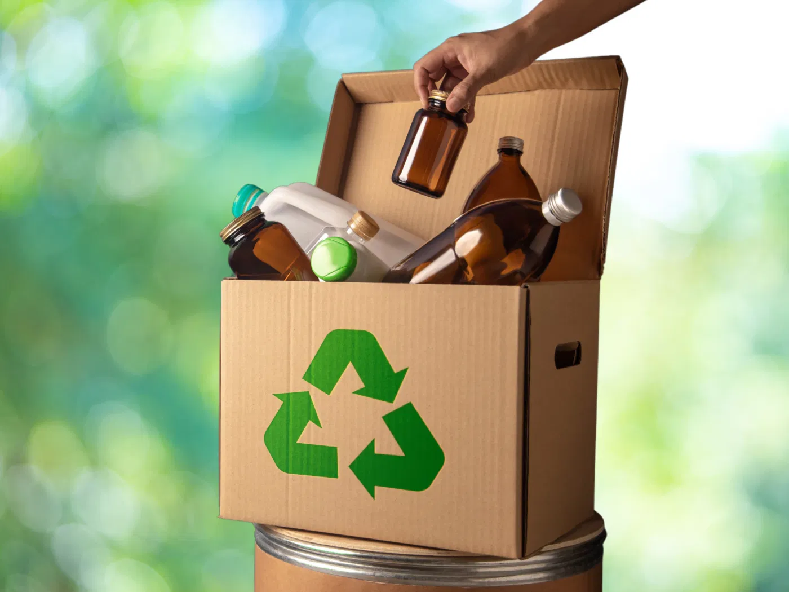
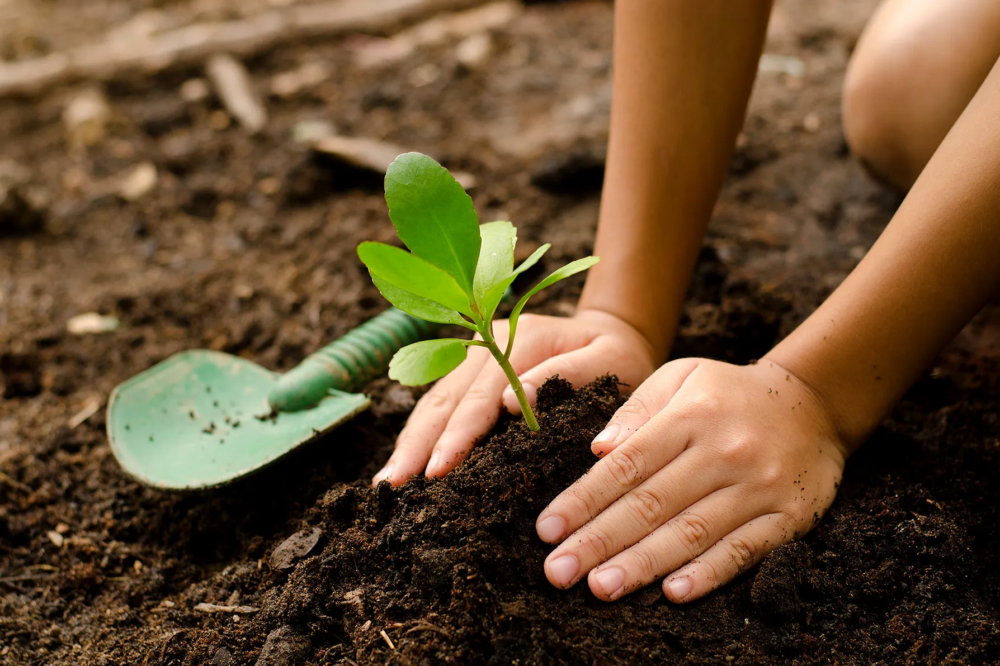
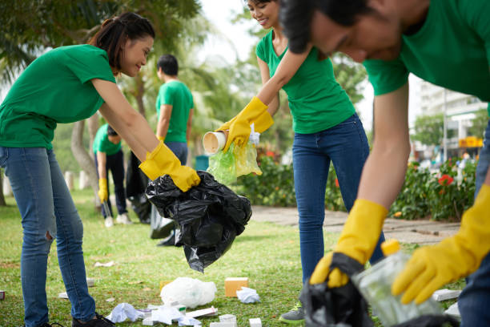

Acciones Cotidianas para Proteger la Vida Silvestre
La **pérdida de hábitat**, la **contaminación** y el **cambio climático** son las mayores amenazas para las especies. Pequeños cambios en tu rutina diaria pueden tener un impacto gigante en la supervivencia de los animales listados en esta página y muchos más.
🌳 Enfócate en las 3 R: Reducir, Reutilizar y Reciclar
- **Recoge tu basura:** Participa en jornadas de limpieza o simplemente no dejes residuos en la naturaleza. El plástico en ríos y océanos es mortal para la fauna.
- **Reduce tu consumo de plásticos:** Evita las botellas desechables, bolsas de un solo uso y envases innecesarios. Elige productos duraderos.
- **Recicla correctamente:** Separa tus residuos de papel, vidrio y plástico. Al reducir la necesidad de materias primas, disminuyes la destrucción de hábitats.
💧 Cuida el Agua y la Energía
- **Ahorra agua:** Cierra la llave mientras te cepillas y toma duchas más cortas. Menos consumo significa menos contaminación de ecosistemas vitales (como Xochimilco para el Ajolote).
- **Usa focos de bajo consumo:** Al reducir tu huella de carbono, ayudas a combatir el cambio climático, que amenaza a especies como el Oso Polar y el Leopardo de las Nieves.
🛍️ Elige Productos Sostenibles
- **Evita productos con aceite de palma no sostenible:** Su producción destruye la selva tropical, hábitat del Orangután de Borneo y el Tigre de Sumatra. Busca etiquetas con certificación.
- **Compra local y responsable:** Apoya a comunidades que practican la agricultura y pesca sostenible para no sobreexplotar los recursos naturales.
- **Nunca compres fauna silvestre:** El tráfico ilegal de animales es una causa directa de que especies como el Pangolín y el Gorila de Montaña estén en peligro. ¡Denuncia la venta!


